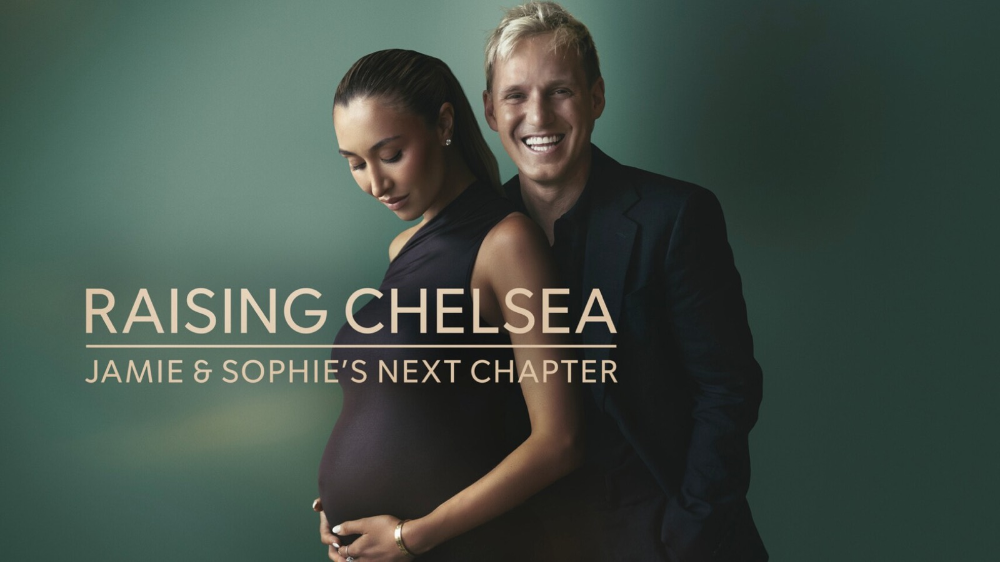
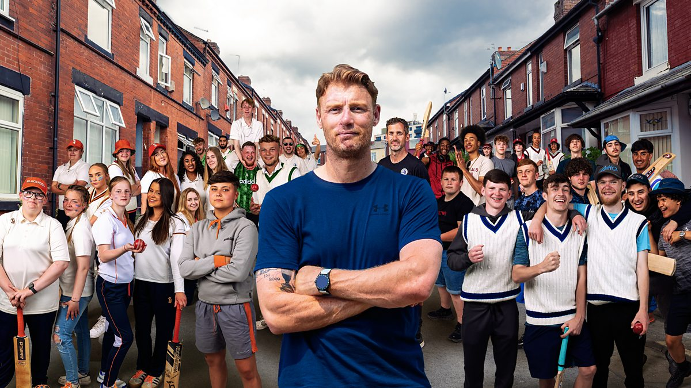

Harry is a Documentary Producer, Director, DOP and Designer based in Bristol and London. An experienced producer-director with a cinematic eye, specialising in human-interest stories that get under the skin of their subjects. Over the past seven years he has crafted ambitious prime-time factual and observational programmes for the UK's most-watched broadcasters.
His credits include the BAFTA-nominated Educating Yorkshire, the BAFTA-winning Ambulance (RTS Award for his series), and the BAFTA-nominated Freddie Flintoff's Field of Dreams. He also develops tools that help documentary practitioners capture authentic moments.
I also enjoy developing and building tools that help film makers. Earwig is an on-set companion that lets you mark the moment as it happens, then carries your markers and selects straight into the edit.
Click here to find out more→I've been fortunate to contribute to a number of award-winning and nominated broadcasts, across a range of roles and stages of production.







.jpg)
_0009_CB_Grade_JPG_1.49.1.jpg)

If you've got a story to tell, a series to crew, or just fancy a chat about documentary, drop me a line. I'd love to hear from you.

Harry is a Documentary Producer, Director, DOP and Designer based in Bristol and London. An experienced producer-director with a cinematic eye, specialising in human-interest stories that get under the skin of their subjects. Over the past seven years he has crafted ambitious prime-time factual and observational programmes for the UK's most-watched broadcasters.
His credits include the BAFTA-nominated Educating Yorkshire, the BAFTA-winning Ambulance (RTS Award for his series), and the BAFTA-nominated Freddie Flintoff's Field of Dreams. He also develops tools that help documentary practitioners capture authentic moments.
Alongside his directorial work, Harry operates a Sony FX6 on professional productions.